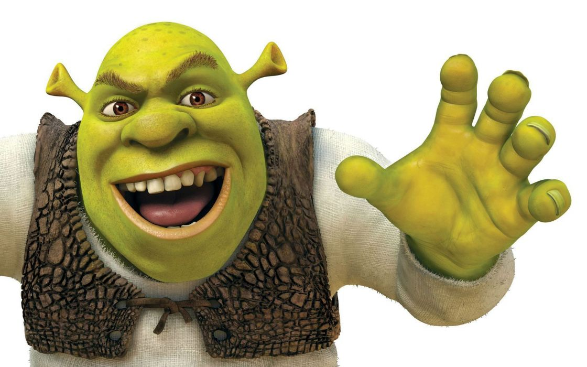

Shrek (regally known as Sir Shrek) is the titular protagonist of the Shrek franchise. He is Fiona's husband, Donkey and Puss' best friend, the ogre triplets' father, and the son in law of Queen Lillian and King Harold.
 More imagesThere are a couple of things that make and motivate me to finish a project. First of all, I think about the fact that at the beginning of a project you may not like it, but in the process I can discover a lot of new things and often I like the project and I do it with more pleasure than at the beginning. Secondly, my level as a designer depends on a well made projects , it is very important for me
Often I work with a computer sitting in bed, I feel more comfortable there:3 it is very important for me to be without unnecessary thoughts in my head and for this I turn on electronic music that will fill my mind and prevent unnecessary thoughts from entering my head while I work on projects 🤙🏼